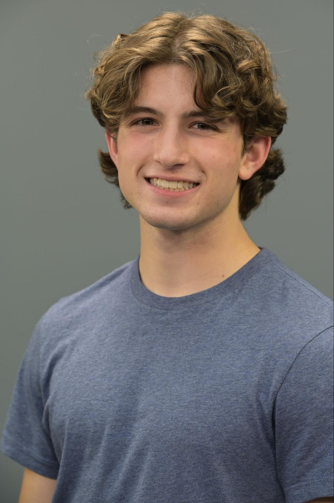

The SpongeBob Musical (SpongeBob): Dylan learned how to fly with the help from ZFX Flying Effects.
The SpongeBob Musical (SpongeBob): Dylan learned how to fly with the help from ZFX Flying Effects.

Pippin (Leading Player): Dylan trained at a circus school for two months where he learned skills on the trapeze to perform during the opening number, “Magic to Do”.

Beautiful Burnout (Ajay Chopra): Dylan trained at a local boxing gym for a month. He learned proper boxing terminology and technique, as well as worked with a boxing coach to choreograph the final, 10-minute, boxing match scene at the end of the play, Beautiful Burnout.

© 2025 - All Rights Reserved